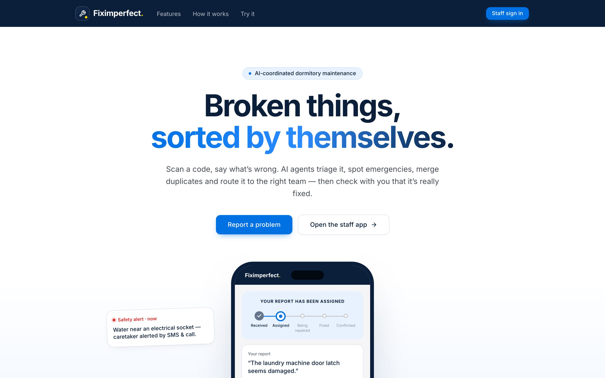
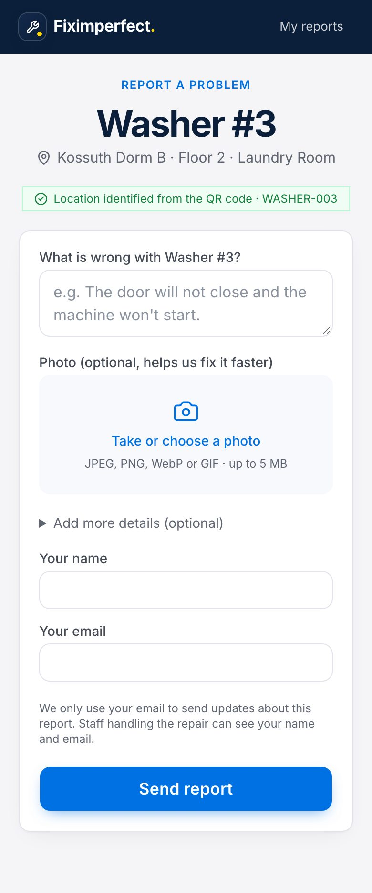
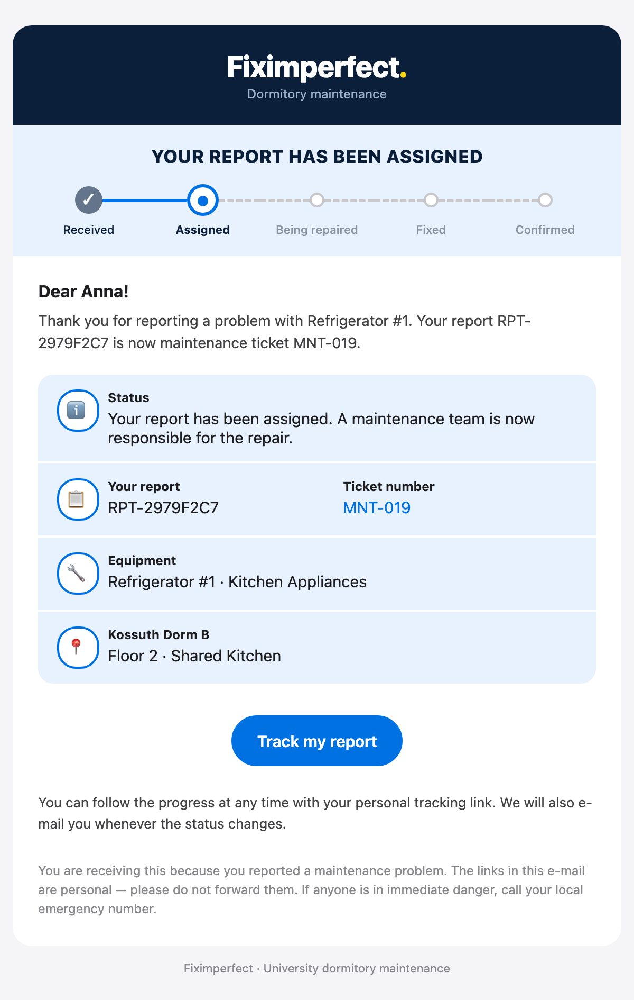
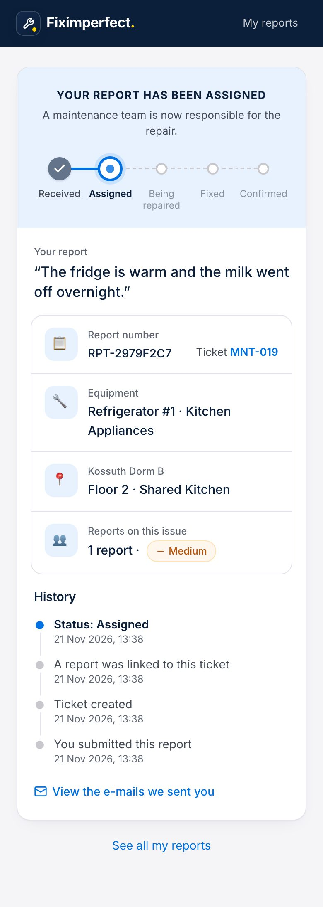
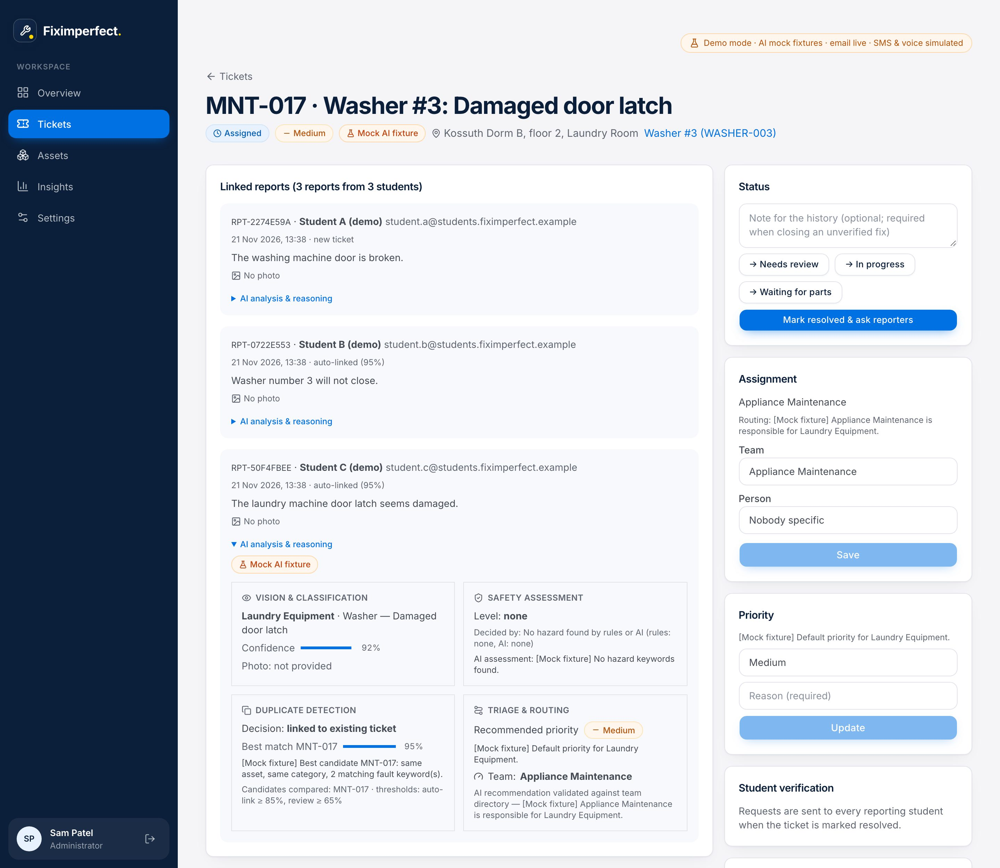
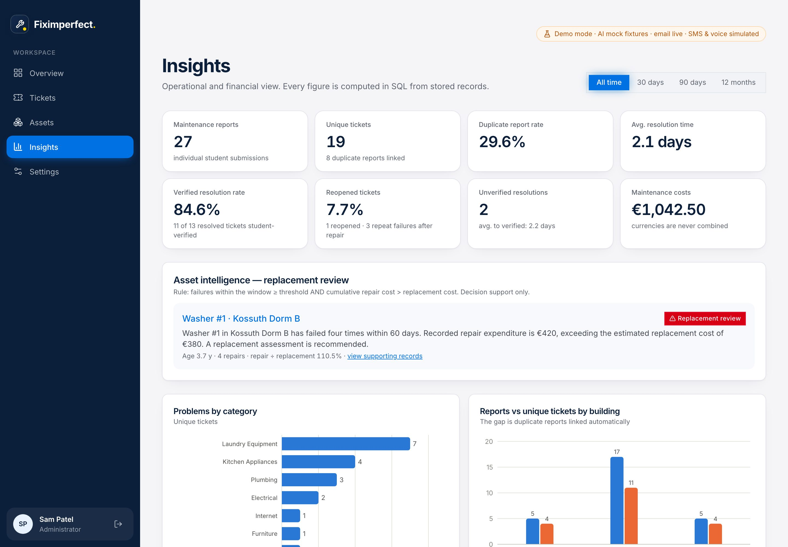

<title>Fiximperfect Pitch Deck</title>
<meta name="claude:viewport-fit-sides" content="cover">
<link rel="preconnect" href="https://fonts.googleapis.com">
<link rel="stylesheet" href="https://fonts.googleapis.com/css2?family=Inter:wght@400;500;600;700&family=Manrope:wght@600;700;800&display=swap">
<style>
  /* Layout: a vertical reel of 16:9 slides, each followed by its timed speaking script.
     Single deliberate look (the Fiximperfect brand), so colours are set explicitly. */
  :root {
    color-scheme: light;
    --navy: #0b1f3a;
    --navy-2: #13294b;
    --blue: #0071e3;
    --soft: #e8f2ff;
    --page: #eceff4;
    --white: #ffffff;
    --body: #454b55;
    --muted: #5f6672;
    --line: #e1e5eb;
    --dot: #ffd700;
    --s-received: #64748b;
    --s-assigned: #0071e3;
    --s-repair: #d97706;
    --s-fixed: #16a34a;
    --s-confirmed: #0b1f3a;
    --danger: #dc2626;
    --font-display: "Manrope", "Inter", system-ui, sans-serif;
    --font-body: "Inter", system-ui, -apple-system, "Segoe UI", sans-serif;
    --font-mono: ui-monospace, "SF Mono", Menlo, monospace;
  }
  * { box-sizing: border-box; }
  body {
    margin: 0;
    background: var(--page);
    color: var(--body);
    font: 15px/1.55 var(--font-body);
    padding-left: max(16px, env(safe-area-inset-left, 0px));
    padding-right: max(16px, env(safe-area-inset-right, 0px));
    padding-block: 32px 64px;
  }
  .reel { max-width: 1120px; margin: 0 auto; display: grid; gap: 56px; }
  header.intro { display: grid; gap: 6px; }
  header.intro h1 { margin: 0; font: 800 clamp(26px, 4vw, 36px)/1.1 var(--font-display); color: var(--navy); letter-spacing: -0.02em; text-wrap: balance; }
  header.intro p { margin: 0; color: var(--muted); max-width: 65ch; }
  .clock { display: inline-flex; gap: 8px; flex-wrap: wrap; margin-top: 8px; }
  .clock span { font: 600 12px/1 var(--font-body); background: var(--white); border: 1px solid var(--line); border-radius: 999px; padding: 6px 10px; color: var(--navy); font-variant-numeric: tabular-nums; }

  section.unit { display: grid; gap: 18px; }

  /* --- Slide frame (scales with its own width via container units) --- */
  .slide {
    container-type: inline-size;
    aspect-ratio: 16 / 9;
    width: 100%;
    max-width: 100%;
    border-radius: 18px;
    overflow: hidden;
    background: var(--white);
    box-shadow: 0 1px 2px rgba(11, 31, 58, .06), 0 24px 48px -24px rgba(11, 31, 58, .35);
    position: relative;
  }
  .s { position: absolute; inset: 0; padding: 4.2cqi 5cqi; display: grid; color: var(--body); font-size: 1.45cqi; }
  .s.navy { background: var(--navy); color: rgba(255,255,255,.82); }
  .eyebrow { font: 700 1.05cqi/1 var(--font-body); letter-spacing: .14em; text-transform: uppercase; color: var(--blue); }
  .navy .eyebrow { color: #7fb8ff; }
  .h { font: 800 3.7cqi/1.06 var(--font-display); letter-spacing: -0.03em; color: var(--navy); margin: 1.1cqi 0 0; text-wrap: balance; }
  .navy .h { color: var(--white); }
  .lede { font-size: 1.7cqi; line-height: 1.5; margin: 1.4cqi 0 0; max-width: 46ch; }
  .wm { position: absolute; right: 5cqi; bottom: 3cqi; font: 800 1.3cqi/1 var(--font-display); color: var(--navy); letter-spacing: -0.02em; }
  .navy .wm { color: var(--white); }
  .wm b { color: var(--dot); }
  .pg { position: absolute; right: 5cqi; top: 3.2cqi; font: 600 1.05cqi/1 var(--font-body); color: var(--muted); font-variant-numeric: tabular-nums; }
  .navy .pg { color: rgba(255,255,255,.5); }

  /* Slide 1 */
  .s1 { grid-template-columns: 1.05fr .95fr; gap: 4cqi; align-content: center; }
  .users { display: grid; gap: 1cqi; margin-top: 2.2cqi; }
  .user { display: grid; grid-template-columns: 3.4cqi 1fr; gap: 1.2cqi; align-items: start; }
  .user i { font-style: normal; width: 3.4cqi; height: 3.4cqi; border-radius: 1cqi; display: grid; place-items: center; background: rgba(255,255,255,.08); font-size: 1.7cqi; }
  .user strong { display: block; color: var(--white); font-size: 1.5cqi; }
  .user span { font-size: 1.3cqi; }
  .story { align-self: center; background: var(--white); color: var(--body); border-radius: 1.6cqi; padding: 2.4cqi; display: grid; gap: 1.2cqi; }
  .story .tag { font: 700 1cqi/1 var(--font-body); letter-spacing: .12em; text-transform: uppercase; color: var(--muted); }
  .story h3 { margin: 0; font: 800 1.9cqi/1.2 var(--font-display); color: var(--navy); }
  .mail { border: 1px solid var(--line); border-radius: 1cqi; padding: 1cqi 1.3cqi; font-size: 1.25cqi; display: grid; grid-template-columns: auto 1fr; gap: .3cqi 1cqi; }
  .mail b { color: var(--navy); font-weight: 600; }
  .mail em { font-style: normal; color: var(--muted); grid-column: 2; }
  .mail.alarm { border-color: #fbd5d5; background: #fef2f2; }
  .mail.alarm b { color: #b91c1c; }
  .story p { margin: 0; font-size: 1.3cqi; }

  /* Slide 2 */
  .s2 { grid-template-columns: .9fr 1.1fr; gap: 3.5cqi; align-items: center; background: linear-gradient(180deg, var(--white), var(--soft)); }
  .pills { display: flex; flex-wrap: wrap; gap: .8cqi; margin-top: 2.4cqi; }
  .pill { font: 600 1.2cqi/1 var(--font-body); padding: .9cqi 1.3cqi; border-radius: 999px; background: var(--white); border: 1px solid var(--line); color: var(--navy); }
  .shot { width: 100%; height: auto; display: block; border-radius: 1.2cqi; border: 1px solid var(--line); box-shadow: 0 2cqi 4cqi -2cqi rgba(11,31,58,.35); }

  /* Slide 3 — architecture */
  .s3 { grid-template-rows: auto 1fr auto; gap: 1.6cqi; }
  .flow { display: grid; grid-template-columns: 1fr auto 1.15fr auto 1.6fr auto 1.2fr; gap: 1cqi; align-items: center; }
  .node { background: var(--white); border: 1px solid var(--line); border-radius: 1.2cqi; padding: 1.3cqi; box-shadow: 0 .4cqi 1.2cqi -.6cqi rgba(11,31,58,.18); }
  .node b { display: block; font: 700 1.35cqi/1.2 var(--font-display); color: var(--navy); }
  .node span { display: block; font-size: 1.08cqi; line-height: 1.4; margin-top: .4cqi; color: var(--muted); }
  .node.brain { background: var(--navy); border-color: var(--navy); }
  .node.brain b { color: var(--white); }
  .node.brain span { color: rgba(255,255,255,.7); }
  .agents { display: grid; gap: .7cqi; margin-top: 1cqi; }
  .round { display: grid; grid-template-columns: 1fr 1fr; gap: .7cqi; }
  .agent { background: rgba(255,255,255,.08); border: 1px solid rgba(255,255,255,.14); border-radius: .8cqi; padding: .7cqi .8cqi; font: 600 1.02cqi/1.25 var(--font-body); color: var(--white); }
  .agent small { display: block; font-weight: 400; color: rgba(255,255,255,.6); font-size: .92cqi; }
  .rlabel { font: 700 .85cqi/1 var(--font-body); letter-spacing: .1em; text-transform: uppercase; color: #7fb8ff; }
  .arrow { font: 700 2cqi/1 var(--font-body); color: var(--blue); }
  .outs { display: grid; gap: .8cqi; }
  .out { display: grid; grid-template-columns: .6cqi 1fr; gap: .9cqi; align-items: center; background: var(--white); border: 1px solid var(--line); border-radius: 1cqi; padding: .8cqi 1cqi; }
  .out::before { content: ""; width: .6cqi; height: 2.6cqi; border-radius: 1cqi; background: var(--c, var(--blue)); }
  .out b { font: 700 1.15cqi/1.2 var(--font-display); color: var(--navy); }
  .out span { display: block; font-size: .98cqi; color: var(--muted); }
  .tools { display: flex; flex-wrap: wrap; gap: .7cqi; align-items: center; }
  .tools .label { font: 700 .95cqi/1 var(--font-body); letter-spacing: .12em; text-transform: uppercase; color: var(--muted); margin-right: .6cqi; }
  .tool { font: 600 1.1cqi/1 var(--font-body); padding: .8cqi 1.1cqi; border-radius: 999px; background: var(--soft); color: var(--navy); }
  .guard { font-size: 1.1cqi; color: var(--muted); }
  .guard b { color: var(--navy); }

  /* Slide 4 — screenshots */
  .s4 { grid-template-rows: auto 1fr; gap: 1.6cqi; background: var(--page); }
  .gallery { display: grid; grid-template-columns: .62fr .78fr .62fr 1.55fr; gap: 1.4cqi; min-height: 0; }
  .g { display: grid; grid-template-rows: 1fr auto; gap: .7cqi; min-height: 0; }
  .g .frame { min-height: 0; overflow: hidden; border-radius: 1.1cqi; border: 1px solid var(--line); background: var(--white); box-shadow: 0 1cqi 2.4cqi -1.4cqi rgba(11,31,58,.35); }
  .g .frame img { width: 100%; height: auto; display: block; }
  .g.phone .frame { border: .55cqi solid var(--navy); border-radius: 2.2cqi; }
  .g figcaption { font: 600 1.08cqi/1.3 var(--font-body); color: var(--navy); }
  .g figcaption span { display: block; font-weight: 400; color: var(--muted); font-size: .98cqi; }
  .stack { display: grid; grid-template-rows: 1fr 1fr; gap: 1.4cqi; min-height: 0; }
  figure { margin: 0; }

  /* Slide 5 */
  .s5 { grid-template-columns: 1fr 1fr; gap: 4cqi; align-content: center; }
  .col h3 { margin: 0 0 1.4cqi; font: 700 1.1cqi/1 var(--font-body); letter-spacing: .14em; text-transform: uppercase; color: #7fb8ff; }
  .benefit { display: grid; grid-template-columns: 1fr; gap: .2cqi; padding: 1.1cqi 0; border-top: 1px solid rgba(255,255,255,.12); }
  .benefit b { color: var(--white); font: 700 1.55cqi/1.2 var(--font-display); }
  .benefit span { font-size: 1.28cqi; }
  .proof { display: grid; grid-template-columns: repeat(2, 1fr); gap: 1cqi; margin-top: 1.8cqi; }
  .proof div { background: rgba(255,255,255,.06); border: 1px solid rgba(255,255,255,.12); border-radius: 1cqi; padding: 1.1cqi; }
  .proof strong { display: block; color: var(--white); font: 800 2.4cqi/1 var(--font-display); font-variant-numeric: tabular-nums; }
  .proof span { font-size: 1.05cqi; line-height: 1.35; display: block; margin-top: .5cqi; }
  .next { display: grid; gap: .9cqi; counter-reset: n; }
  .next li { list-style: none; display: grid; grid-template-columns: 2.6cqi 1fr; gap: 1cqi; align-items: start; counter-increment: n; }
  .next li::before { content: counter(n); width: 2.6cqi; height: 2.6cqi; border-radius: 50%; background: var(--blue); color: var(--white); display: grid; place-items: center; font: 700 1.2cqi/1 var(--font-body); }
  .next b { color: var(--white); display: block; font-size: 1.4cqi; }
  .next span { font-size: 1.2cqi; }
  .next ol { margin: 0; padding: 0; }

  /* --- Speaking script --- */
  .script { background: var(--white); border: 1px solid var(--line); border-radius: 14px; padding: 18px 22px; display: grid; gap: 8px; }
  .script .meta { display: flex; flex-wrap: wrap; gap: 10px; align-items: baseline; }
  .script .time { font: 700 13px/1 var(--font-mono); color: var(--blue); font-variant-numeric: tabular-nums; }
  .script .title { font: 700 15px/1.2 var(--font-display); color: var(--navy); }
  .script p { margin: 0; max-width: 72ch; color: var(--body); }
  .script .do { font-size: 13px; color: var(--muted); }
  .script .do b { color: var(--navy); }

  @media (max-width: 640px) {
    .reel { gap: 40px; }
    .slide { border-radius: 12px; }
  }
  @media (prefers-reduced-motion: no-preference) {
    .slide { transition: transform .4s cubic-bezier(.16,1,.3,1); }
  }
  a { color: var(--blue); }
  :focus-visible { outline: 3px solid var(--blue); outline-offset: 3px; }

  /* Print / PDF export: one slide per page, no scripts. */
  @page { size: 1280px 720px; margin: 0; }
  @media print {
    body { padding: 0; background: var(--white); }
    .reel { max-width: none; gap: 0; }
    header.intro, .script { display: none; }
    section.unit { display: block; }
    .slide { width: 1280px; height: 720px; border-radius: 0; box-shadow: none; break-after: page; }
    * { -webkit-print-color-adjust: exact; print-color-adjust: exact; }
  }
</style>

<main class="reel">
  <header class="intro">
    <h1>Fiximperfect — 3-minute pitch</h1>
    <p>Five slides in the order Problem → Solution → How it works → Screenshots → Impact. Each slide has its speaking script and timing below it. About 430 words in total, which is three minutes at a calm pace.</p>
    <div class="clock" aria-label="Timing plan">
      <span>1 · 0:00–0:35</span><span>2 · 0:35–1:05</span><span>3 · 1:05–1:50</span><span>4 · 1:50–2:30</span><span>5 · 2:30–3:00</span>
    </div>
  </header>

  <!-- 1 · Problem and user -->
  <section class="unit" aria-label="Slide 1, problem and user">
    <div class="slide">
      <div class="s navy s1">
        <div>
          <div class="eyebrow">The problem</div>
          <h2 class="h">Dorm repairs get reported. Then they get lost.</h2>
          <div class="users">
            <div class="user"><i aria-hidden="true">🎓</i><div><strong>Students</strong><span>report problems but never hear back, so they report again.</span></div></div>
            <div class="user"><i aria-hidden="true">🧰</i><div><strong>Caretakers</strong><span>sort a flood of messages by hand: duplicates, vague text, no location.</span></div></div>
            <div class="user"><i aria-hidden="true">📊</i><div><strong>Management</strong><span>pays for the same broken machine again and again without seeing it.</span></div></div>
          </div>
        </div>
        <div class="story">
          <div class="tag">One evening, Kossuth Dorm B</div>
          <h3>Three messages about one washer. One message about real danger.</h3>
          <div class="mail"><b>18:02</b><span>“The washing machine door is broken.”</span></div>
          <div class="mail"><b>18:09</b><span>“Washer number 3 will not close.”</span></div>
          <div class="mail"><b>18:15</b><span>“The laundry machine door latch seems damaged.”</span></div>
          <div class="mail alarm"><b>18:21</b><span>“There is water near an electrical socket.”</span></div>
          <p>In a shared inbox, all four look the same. The emergency waits in the queue behind three duplicates.</p>
        </div>
      </div>
      <div class="pg">1 / 5</div>
    </div>
    <div class="script">
      <div class="meta"><span class="time">0:00 – 0:35</span><span class="title">Problem and user</span></div>
      <p>In every dormitory, things break: washers, fridges, heating. Students report them, and then nothing seems to happen. So they report again. One evening in Kossuth Dorm B, three students write about the same broken washer in three different ways. Then a fourth writes: “There is water near an electrical socket.” For the caretaker, that’s four similar messages in one inbox, and the dangerous one waits behind the duplicates. Management, meanwhile, keeps paying to repair the same machine without ever seeing the pattern.</p>
      <p class="do"><b>Do:</b> pause after the socket line. It is the moment the audience remembers.</p>
    </div>
  </section>

  <!-- 2 · Solution -->
  <section class="unit" aria-label="Slide 2, solution">
    <div class="slide">
      <div class="s s2">
        <div>
          <div class="eyebrow">The solution</div>
          <h2 class="h">Scan a QR code. AI agents coordinate the repair.</h2>
          <p class="lede">Fiximperfect turns one-minute student reports into one ticket per real problem, escalates emergencies instantly, and asks every reporter whether the repair actually worked.</p>
          <div class="pills">
            <span class="pill">No login for students</span>
            <span class="pill">Duplicates merged</span>
            <span class="pill">Emergencies first</span>
            <span class="pill">Repairs verified</span>
          </div>
        </div>
        
      </div>
      <div class="wm">Fiximperfect<b>.</b></div>
      <div class="pg">2 / 5</div>
    </div>
    <div class="script">
      <div class="meta"><span class="time">0:35 – 1:05</span><span class="title">Solution</span></div>
      <p>Fiximperfect fixes the coordination, not just the reporting. Every machine and room has a QR code, so a student scans it, writes one sentence, adds a photo, and they’re done. No login, no forms about where they are. From there, AI agents take over: they understand the problem, merge duplicates into one ticket, push emergencies to the front, and when the repair is done, they ask every student who reported it whether it’s really fixed.</p>
      <p class="do"><b>Do:</b> point at the phone in the screenshot when you say “scan it”.</p>
    </div>
  </section>

  <!-- 3 · How it works -->
  <section class="unit" aria-label="Slide 3, how it works">
    <div class="slide">
      <div class="s s3">
        <div>
          <div class="eyebrow">How it works</div>
          <h2 class="h" style="font-size:3.1cqi">Four specialist agents, checked by hard rules.</h2>
        </div>
        <div class="flow">
          <div class="node"><b>QR scan</b><span>Server resolves building, floor and asset. The browser is never trusted for location.</span></div>
          <div class="arrow" aria-hidden="true">→</div>
          <div class="node"><b>Report API</b><span>Validates input, checks the photo, stores it privately, rate-limits.</span></div>
          <div class="arrow" aria-hidden="true">→</div>
          <div class="node brain">
            <b>Orchestrator</b>
            <div class="agents">
              <div class="rlabel">Round 1 · in parallel</div>
              <div class="round">
                <div class="agent">Vision &amp; classification<small>reads photo + text</small></div>
                <div class="agent">Safety assessment<small>+ deterministic rules</small></div>
              </div>
              <div class="rlabel">Round 2 · in parallel</div>
              <div class="round">
                <div class="agent">Duplicate detection<small>SQL candidates → Claude</small></div>
                <div class="agent">Triage &amp; routing<small>real team directory only</small></div>
              </div>
            </div>
          </div>
          <div class="arrow" aria-hidden="true">→</div>
          <div class="outs">
            <div class="out" style="--c: var(--danger)"><div><b>Emergency alerts</b><span>SMS, call, e-mail, auto-escalation</span></div></div>
            <div class="out" style="--c: var(--s-assigned)"><div><b>One ticket</b><span>locked transaction, no duplicates</span></div></div>
            <div class="out" style="--c: var(--s-fixed)"><div><b>Student updates</b><span>e-mail + tracking page</span></div></div>
            <div class="out" style="--c: var(--s-repair)"><div><b>Asset intelligence</b><span>repair vs replacement, in SQL</span></div></div>
          </div>
        </div>
        <div style="display:grid; gap:1cqi">
          <div class="guard"><b>Guardrails:</b> every AI output is schema-validated · safety rules can only raise, never lower, urgency · 65–85% duplicate matches go to a human · numbers on dashboards come from SQL, never from the model.</div>
          <div class="tools"><span class="label">Built with</span><span class="tool">Next.js + TypeScript</span><span class="tool">Supabase Postgres · Auth · Storage · RLS</span><span class="tool">Claude via Anthropic SDK</span><span class="tool">Resend</span><span class="tool">Twilio</span><span class="tool">Vercel</span></div>
        </div>
      </div>
      <div class="pg">3 / 5</div>
    </div>
    <div class="script">
      <div class="meta"><span class="time">1:05 – 1:50</span><span class="title">How it works</span></div>
      <p>Here’s the pipeline. The QR code tells our server exactly which machine it is. Then an orchestrator runs four Claude agents in two parallel rounds. One reads the photo and description and classifies the fault. One assesses safety, and next to it sits a set of fixed rules, so if the rules see “water near a socket”, the AI can never downgrade it. Then one agent compares the report with similar open tickets to catch duplicates, and one picks priority and the right team, from our real team directory only. Uncertain matches go to a human. The result is written in a single locked database transaction, so even simultaneous reports can’t create two tickets. It’s built on Next.js, Supabase, Claude, Resend and Twilio.</p>
      <p class="do"><b>Do:</b> trace the arrows left to right with your hand. Say “four agents, two rounds” clearly. It is the agentic core judges look for.</p>
    </div>
  </section>

  <!-- 4 · Screenshots -->
  <section class="unit" aria-label="Slide 4, screenshots">
    <div class="slide">
      <div class="s s4">
        <div>
          <div class="eyebrow">The working product</div>
          <h2 class="h" style="font-size:2.8cqi">From a scan to a verified repair.</h2>
        </div>
        <div class="gallery">
          <figure class="g phone">
            <div class="frame"></div>
            <figcaption>1 · Report<span>Location from the QR code</span></figcaption>
          </figure>
          <figure class="g">
            <div class="frame"></div>
            <figcaption>2 · E-mail<span>Sent the moment it’s triaged</span></figcaption>
          </figure>
          <figure class="g phone">
            <div class="frame"></div>
            <figcaption>3 · Tracking<span>Five colour-coded steps</span></figcaption>
          </figure>
          <div class="stack">
            <figure class="g">
              <div class="frame"></div>
              <figcaption>4 · Caretaker view<span>3 reports, 1 ticket, every AI decision explained</span></figcaption>
            </figure>
            <figure class="g">
              <div class="frame"></div>
              <figcaption>5 · Management<span>Washer #1 flagged: repairs at 110.5% of its price</span></figcaption>
            </figure>
          </div>
        </div>
      </div>
      <div class="pg">4 / 5</div>
    </div>
    <div class="script">
      <div class="meta"><span class="time">1:50 – 2:30</span><span class="title">Screenshots</span></div>
      <p>This is the working product. A student scans Washer number 3, and the location is already filled in. Seconds later they get this e-mail with a five-step tracker, from Received to Confirmed, and the same tracker on their personal page. The caretaker sees our three washer reports as one ticket, and can open the reasoning of every agent: category, confidence, why it’s a duplicate. And management sees things nobody saw before: Washer number 1 failed four times in sixty days, and the repairs now cost 110.5 percent of a new machine. The numbers come straight from the database, not from the AI.</p>
      <p class="do"><b>Do:</b> if you have a minute for a live demo, scan the QR code on the home page instead of reading this slide.</p>
    </div>
  </section>

  <!-- 5 · Impact and next steps -->
  <section class="unit" aria-label="Slide 5, impact and next steps">
    <div class="slide">
      <div class="s navy s5">
        <div class="col">
          <div class="eyebrow">Impact</div>
          <h2 class="h" style="font-size:3.1cqi">Who benefits</h2>
          <div style="margin-top:1.6cqi">
            <div class="benefit"><b>Students</b><span>report in a minute and always know where their repair is.</span></div>
            <div class="benefit"><b>Caretakers</b><span>one ticket per problem, emergencies first, no manual sorting.</span></div>
            <div class="benefit"><b>Management</b><span>evidence for what to repair and what to replace.</span></div>
          </div>
          <div class="proof">
            <div><strong>3 → 1</strong><span>reports merged into one ticket in the demo</span></div>
            <div><strong>79</strong><span>automated tests across workflows, security and permissions</span></div>
          </div>
        </div>
        <div class="col">
          <h3>What comes next</h3>
          <ol class="next">
            <li><div><b>Pilot in one dorm</b><span>live Claude on real photos, a verified e-mail domain, real QR stickers.</span></div></li>
            <li><div><b>Deadline watchdog agent</b><span>chases stalled repairs and unanswered confirmations on its own.</span></div></li>
            <li><div><b>Student assistant</b><span>a chat on the tracking page that answers from that ticket only.</span></div></li>
            <li><div><b>Hungarian and English</b><span>reports and e-mails in the student’s own language.</span></div></li>
          </ol>
        </div>
      </div>
      <div class="wm">Fiximperfect<b>.</b></div>
      <div class="pg">5 / 5</div>
    </div>
    <div class="script">
      <div class="meta"><span class="time">2:30 – 3:00</span><span class="title">Impact and next steps</span></div>
      <p>Students report in a minute and always know where their repair stands. Caretakers get one ticket per problem, with emergencies first. Management finally gets evidence for repair-or-replace decisions. Next, we want to pilot it in one dorm with live photos and real stickers, and add two more agents: a watchdog that chases stalled repairs and a student assistant on the tracking page. Fiximperfect: broken things, sorted by themselves. Thank you.</p>
      <p class="do"><b>Do:</b> end on the tagline, then stop talking. Be ready for two questions: “What if the AI is wrong?” (rules, schema checks and human review) and “Is it running?” (yes: 79 automated tests, and the demo works end to end).</p>
    </div>
  </section>
</main>
